Dnevni gablec
Gotova jela koja se mijenjaju svaki dan. Juha, glavno i salata, taman za pauzu od pola sata.
Bistro na Žitnjaku, Zagreb
Bistro na Žitnjaku u kojem se jede kao u konobi na moru. Dnevni gableci, roštilj i riba koja stigne svježa, radnim danom od 10 do 17.
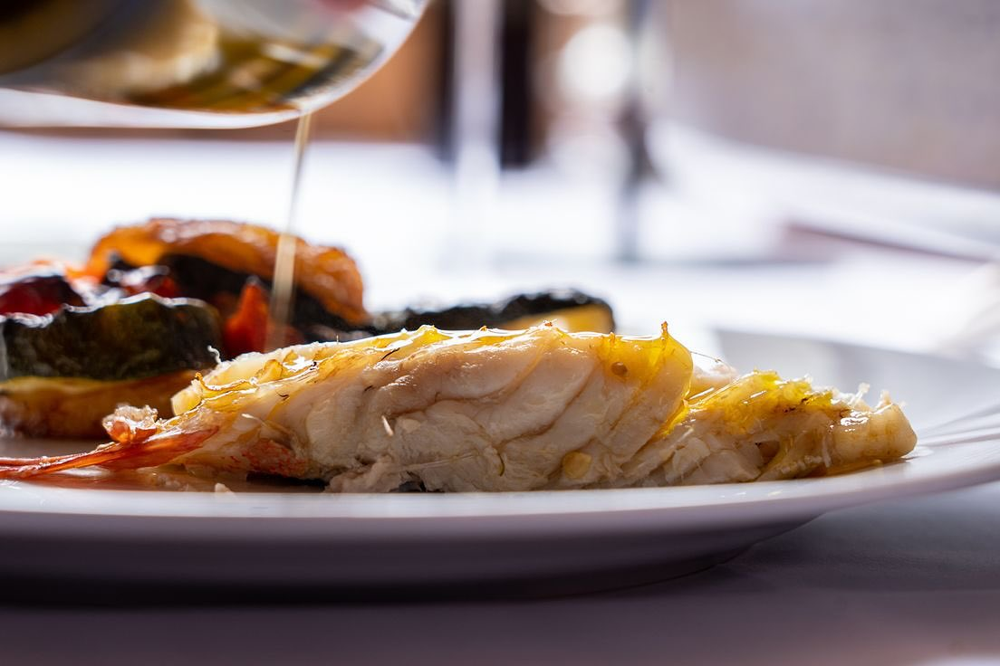
Ocjena gostiju
4,8 na Google recenzijama i 4,7 na Tripadvisoru.
Riba, roštilj, peka i dnevni gablec
Kuha se svaki dan iznova. Riba se bira prema tome što je tog jutra stiglo, meso ide na žar ili pod peku, a uz to stoji dnevna ponuda gotovih jela. Cijena prema dnevnoj ponudi.
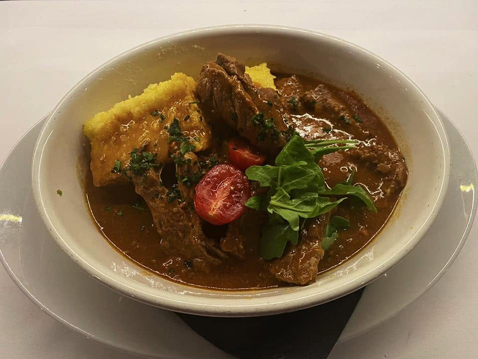
Gotova jela koja se mijenjaju svaki dan. Juha, glavno i salata, taman za pauzu od pola sata.
Bijela i plava riba, škampi i hobotnica. Bira se prema tome što je taj dan stiglo, pa se peče ili lešaje.
Janjetina i teletina ispod peke s krumpirom, onako kako peka traži, polako.
Odresci i kotleti s pravog žara, uz priloge koji nisu naknadna misao.
Brodet, gulaš i jela koja se dugo krčkaju. Ono po čemu se vidi kuha li netko ozbiljno.
Kolač uz kavu na kraju, iz vlastite kuhinje.
Gotova jela, riba i meso s roštilja mijenjaju se svaki dan, prema tome što je tog jutra stiglo.
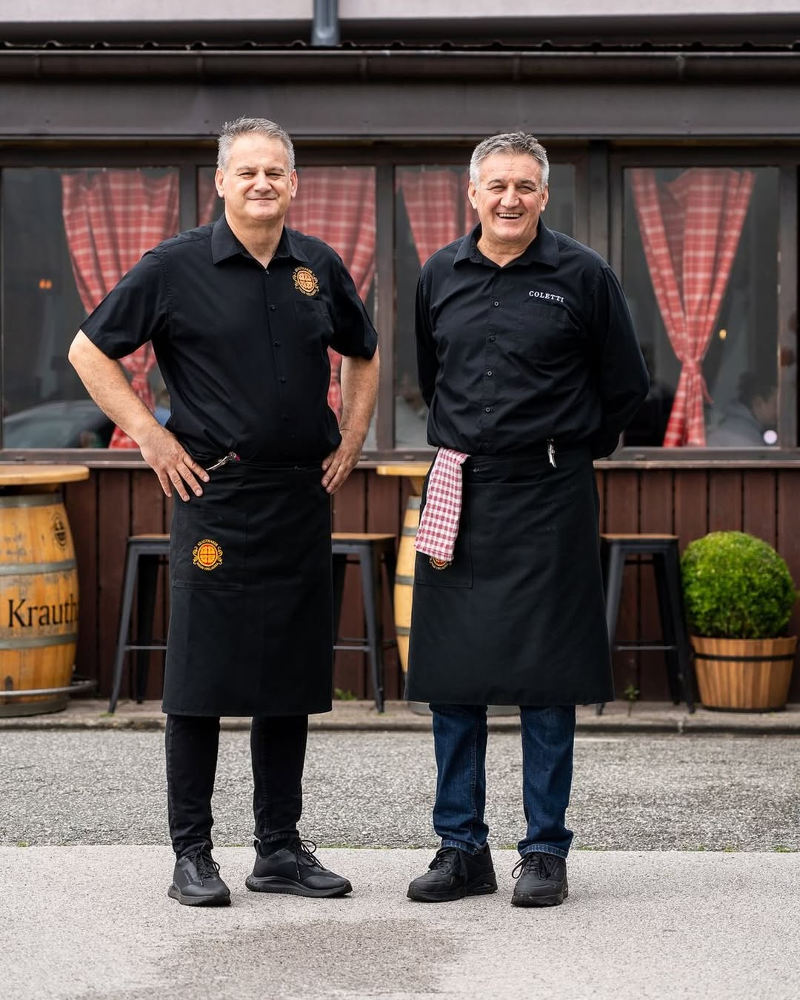
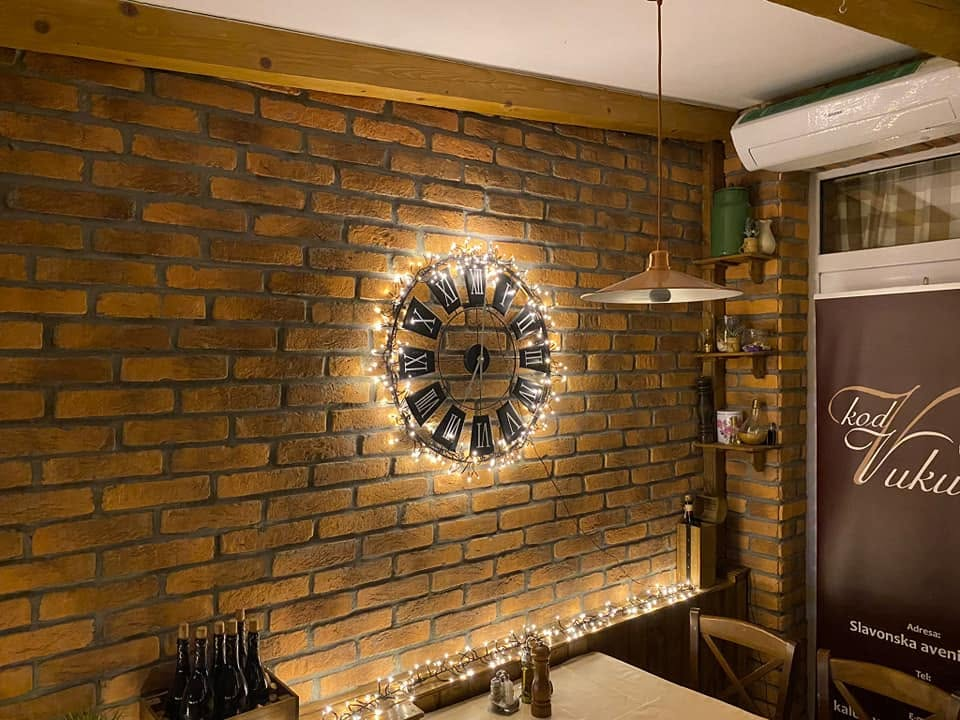
Bistro je na Žitnjaku, uz Slavonsku aveniju, nadomak Coca Colinog pogona, među halama i uredima. Mjesto na kojem se, kad sjednete za stol, zaboravi da je vani industrijska zona.
Za stolovima su ljudi iz okolnih ureda i hala koji su svratili na brz ručak, a uz njih i gosti koji dolaze namjerno, jer znaju što ih čeka.
Kuha se od svježih namirnica, riba se bira istog dana, porcije su velike, a cijena ostaje poštena.
Rezervirajte stolNekoliko kadrova s tanjura i iz bistroa: riba, peka, roštilj i ono što se krčka u loncu.
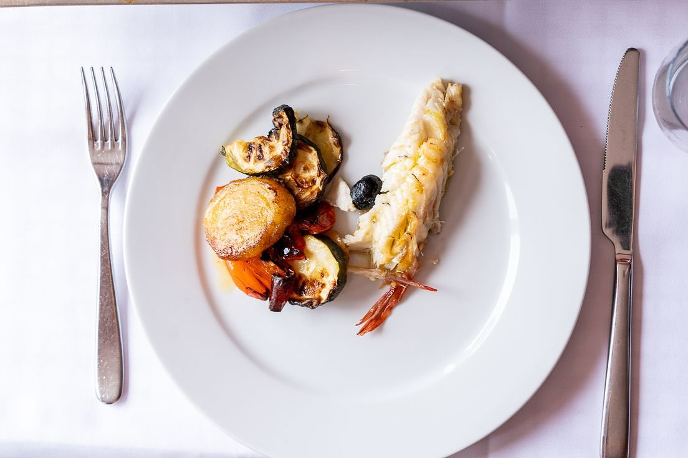
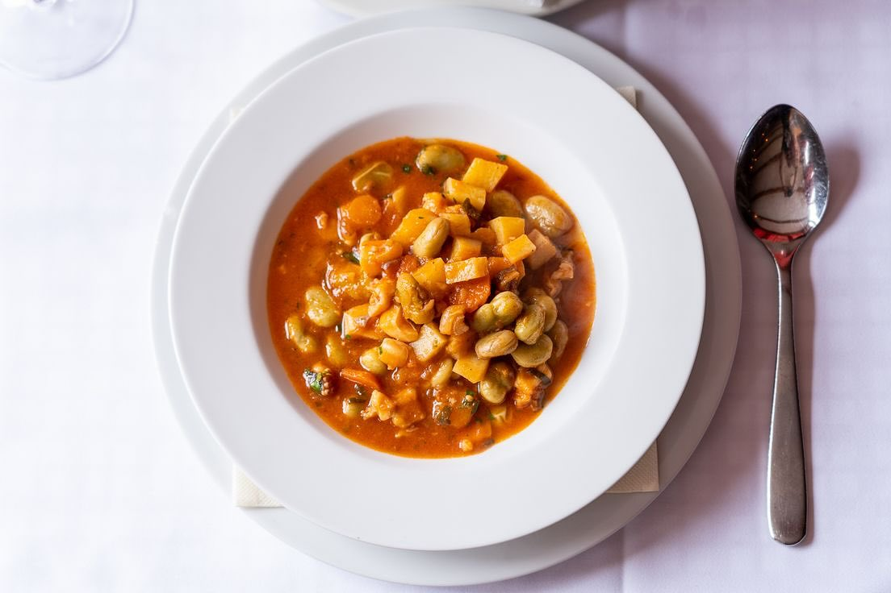
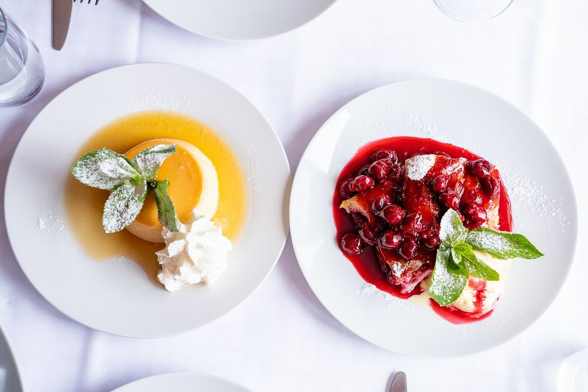
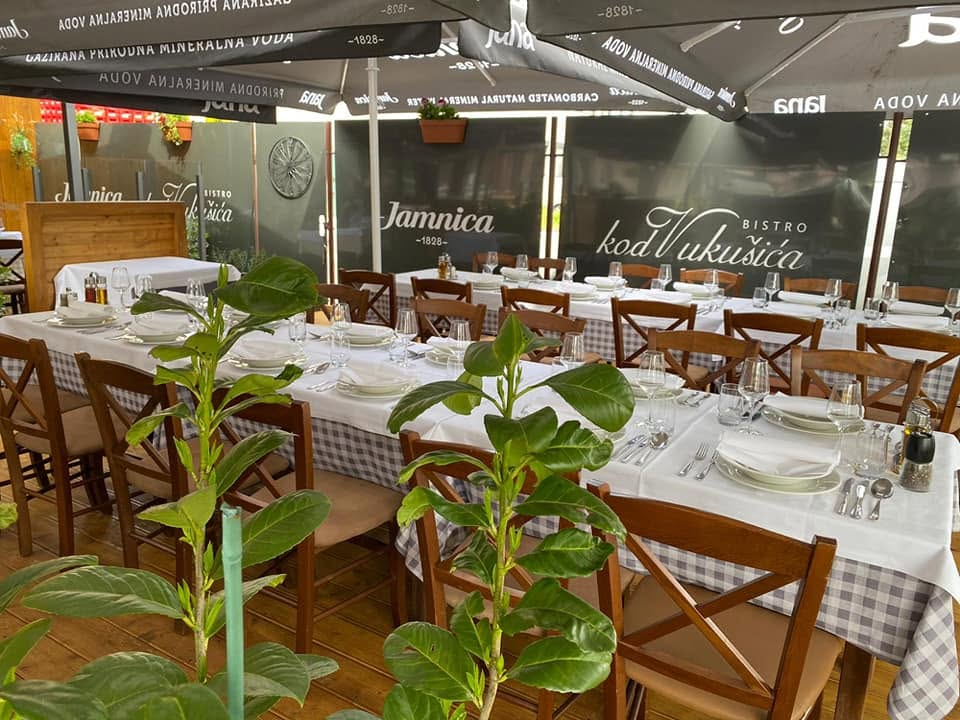
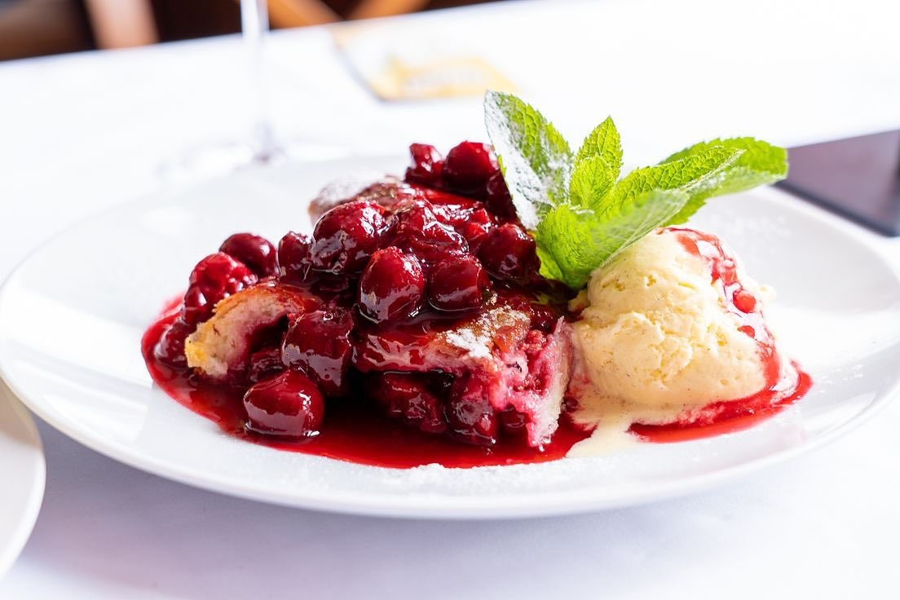
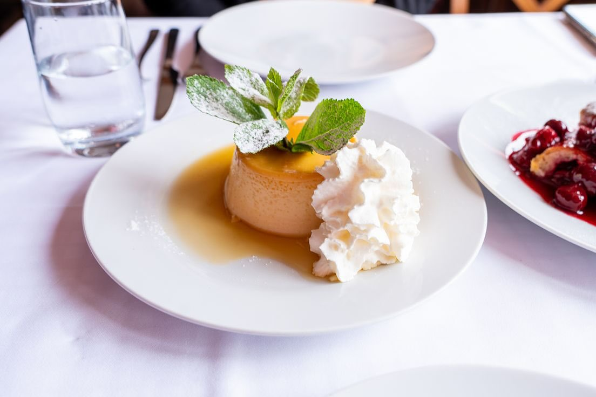
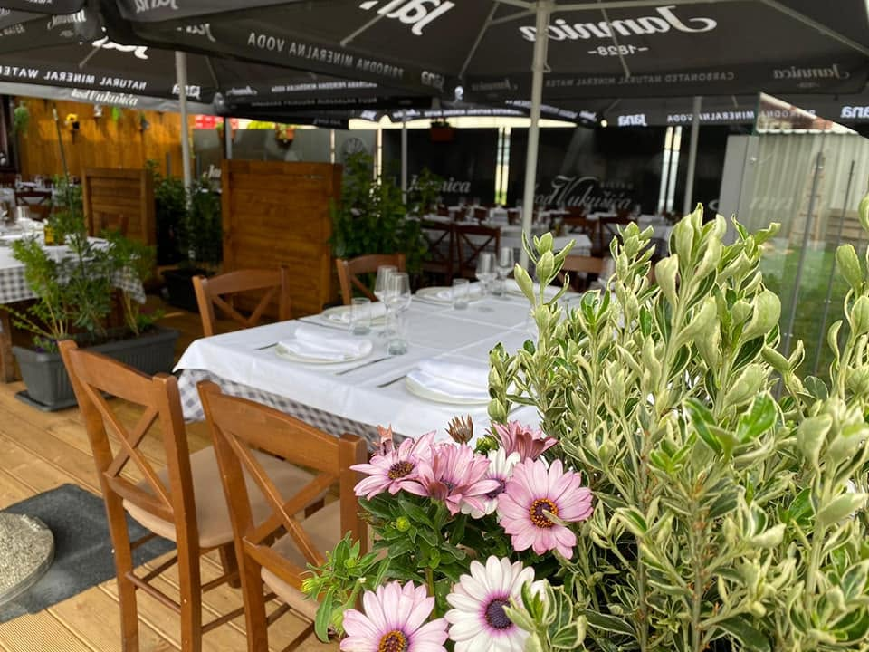
Za veće društvo i za peku nam se javite telefonom, pa dogovorimo termin.
Adresa
Slavonska avenija 22DTelefon
Radno vrijeme
Pon do Pet: 10:00 do 17:00
Subota: zatvoreno
Nedjelja: zatvoreno